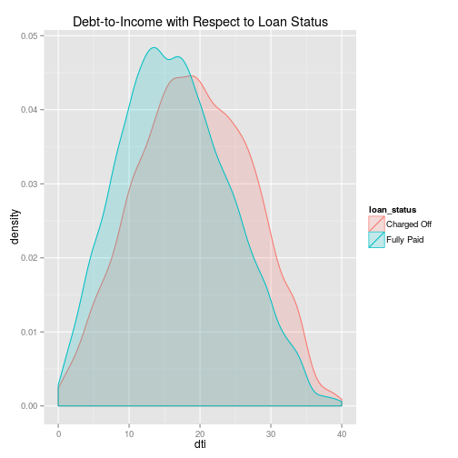

The application is hosted on shinyapps.io, click the link to open the applicaiton. A note is a loan. Lending club is a peer-to-peer personnel loan lender, notes can be funded by individuals and/or instituions.
Matthew Landowski
The application is hosted on shinyapps.io, click the link to open the applicaiton. A note is a loan. Lending club is a peer-to-peer personnel loan lender, notes can be funded by individuals and/or instituions.
List of all the currently availbe variables that will work with the data explorer.
| Variable | Definition |
|---|---|
| loan_amnt | loan amount in dollars |
| int_rate | interest rate on loan |
| installment | monthly payment amount in dollars |
| annual_inc | anual income in dollars |
| dti | Debt-to-income ratio |
| fico_range_low | fico score low |
| fico_range_high | ficoe score high |
| revol_bal | revolving credit balance in dollars |
| revol_util | revolving credit utilization ratio |
| total_acc | total credit accounts |
Looking at the distribution for a variable to get an idea of at what value a fully paid note is likley to happen vs a charged-off note.
A high desntiy of fully paid vs charged-off notes would signifiy a variable that might be worth investigating further.
Example: The figure on the right shows the debt-to-income(dti) ratio for a borrower. The fully paid notes are shifted to the left with respect to the charged off notes. This means that lower dti increases the likely hood that a note will be fully paid.
